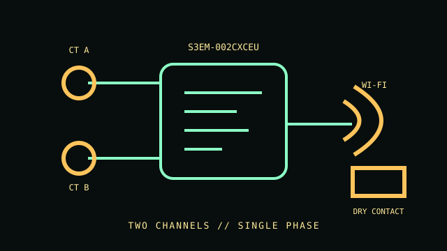

[ SINGLE-PHASE ENERGY METER // S3EM-002CXCEU ]
Shelly EM Gen3
Two-channel single-phase energy monitor with external current transformers and a dry contact. It monitors an installation; it is not a UPS, PDU or branch-circuit protective device.

IDENTIFICATION: Model S3EM-002CXCEU. Confirm the included CT ratings and wiring configuration from the full regional package label before installation.
Specifications & compatibility
| Exact model / function | Shelly EM Gen3, S3EM-002CXCEU; single-phase two-channel electrical and energy monitoring. |
|---|---|
| Measured metrics | Voltage, current, active power and energy are available in the device measurements; the two CT channels can monitor separate circuits. |
| Voltage / phase | Single-phase AC monitor. Use the product technical data and regional manual for the allowable supply and measurement wiring; this record does not generalize a range across regions. |
| Current range / accuracy | CT-based, with up to two external sensors. The source documentation cited here does not establish one universal current range or accuracy across sensor pairings; select only the manufacturer-approved CT for this SKU. |
| Display / network / output | No dedicated local display. Wi-Fi, Bluetooth, local web interface and device API; integrated dry contact for control. Control output is not a safety disconnect. |
| Form factor | Compact electronic monitor for a wall box or electrical cabinet; external CT sensors. |
| Host compatibility | Shelly Smart Control app and documented local interfaces/integrations. Network protocols and supported features depend on firmware; no desktop OS restriction is specified by the manufacturer. |
| Electrical safety | Install only within the exact product manual's supply, wiring and enclosure conditions. CT placement and contactor wiring should be completed with power safely isolated by a qualified person; the relay is not overcurrent protection. |
Installation & archival notes
- Archive the device model, firmware, CT model/rating, channel assignment and measured phase with each dataset.
- Do not interpret Wi-Fi telemetry or relay operation as certified protection or isolation.
- Never install inside an energized enclosure or exceed manufacturer ratings.
Manufacturer sources
- Shelly — EM Gen3 product pageProduct identity, monitoring channels and network features.
- Shelly Knowledge Base — EM Gen3 technical documentationManufacturer device specifications and operation notes.
- Shelly — EM Gen3 device API documentationExposed measurement values and device interface reference.